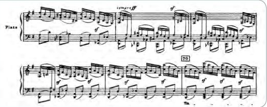

Document 1
Devenir pianiste professionnel
Jouer d'un instrument comme le piano de façon professionnelle implique un entraînement de plusieurs heures par jour dès l'enfance. L'objectif est, entre autres, d'apprendre à réaliser des mouvements rapides et extrêmement précis des doigts des deux mains, qui appuient sur les touches. C'est le cas du pianiste Alexandre Kantorow, lauréat du concours international Tchaïkovski en 2019.

D'après le manuel de SVT Terminale, Hachette.